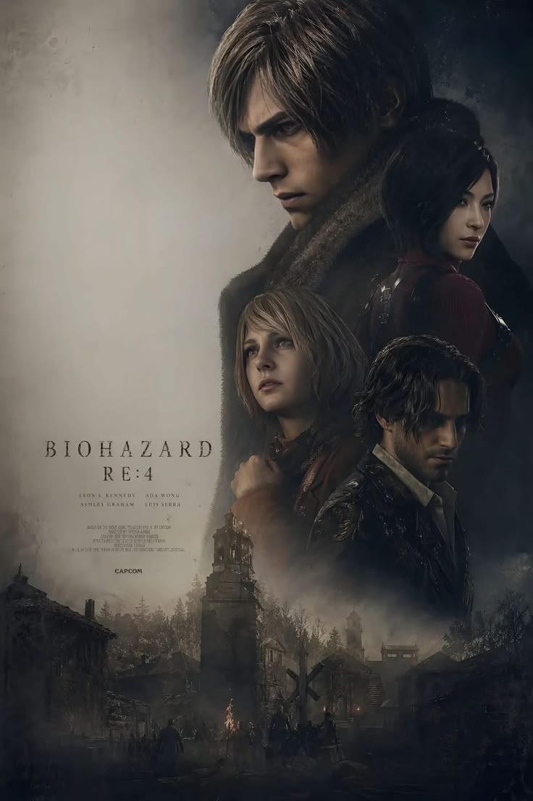

RESIDENT EVIL
Uma nova era de terror começa
.png)
Personagens da série
A imagem reúne rostos conhecidos dos jogos, como Leon, Ada, Claire e Jill.
Curiosidade: vários jogos acompanham diferentes personagens e perspectivas durante os surtos.
.png)
Alice
A protagonista dos filmes é uma personagem original da adaptação para o cinema, interpretada por Milla Jovovich.
Curiosidade: Alice não aparece nos jogos; sua história foi criada para os filmes.

O terror nas ruas
O pôster destaca o clima de sobrevivência e uma cidade devastada, elementos marcantes da franquia.
Curiosidade: Raccoon City é o cenário de alguns dos acontecimentos mais conhecidos da série.

Resident Evil 4
Leon Kennedy parte em uma missão de resgate e encontra personagens como Ada Wong, Ashley Graham e Luis Serra.
Curiosidade: o jogo original popularizou a câmera posicionada sobre o ombro do personagem.

Raccoon City
A cidade fictícia é associada à Umbrella Corporation e ao início de um dos surtos mais famosos da série.
Curiosidade: a Umbrella desenvolve armas biológicas, incluindo o T-vírus.
Sobre o filme
A história
Resident Evil é um filme de ação e terror baseado na popular série de jogos de mesmo nome. A história segue Alice, uma ex-funcionária da Umbrella Corporation, enquanto ela luta contra zumbis e monstros criados por um vírus mortal.
Os filmes
A franquia cinematográfica mistura terror, ficção científica e ação em histórias ligadas à Umbrella Corporation e às consequências de suas experiências. Ao longo dos filmes, Alice enfrenta novas ameaças e tenta sobreviver em um mundo devastado pelo T-vírus.
As adaptações têm personagens e acontecimentos próprios, diferentes dos jogos, mas preservam elementos conhecidos da série, como zumbis, criaturas mutantes e a luta pela sobrevivência.
Por que é o meu favorito
Resident Evil é o meu filme favorito porque ele faz parte da minha infância. Eu o assisti quando era criança e, desde então, ele ficou marcado na minha memória. A mistura de ação, suspense e terror me prendeu desde a primeira vez, e a história de sobreviventes enfrentando uma ameaça misteriosa me deixava sempre curioso para saber o que viria a seguir. Além disso, assistir a esse filme me traz boas lembranças daquela época. Por isso, mesmo depois de tantos anos, continua sendo um filme que eu gosto de rever.
Ficha técnica
- Direção: Paul W. S. Anderson
- Ano de lançamento: 2002
- Gênero: Ação / Terror / Ficção Científica